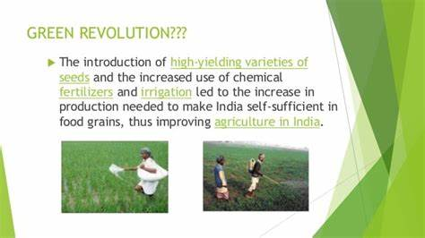

Green revolution refers to a process that increases the production of food grains using the high-yielding varieties,
fertilizers, pesticides, and modern equipment and technology. For example, Prof. Norma Borlaug in Mexico developed
high-yielding varieties of wheat that were resistant to diseases like rust.
3.Start Green Revolution

Throughout the history of human life, many revolutions have come to change and improve our quality of living.
The dictionary meaning of green revolution is the use of methods and tools like fertilizers, pesticides, high-yielding varieties
of crops in developing countries to dramatically increase the production of crops like rice, wheat, etc. Green revolution calls for
the use of better management techniques as well. When did the Green Revolution Start in India?
The Green revolution started in India started with its introduction in Punjab in 1966. It was part of a development program that
was issued by the
government of India along with international donor agencies.In industrialized countries, the green revolution means a steep rise
in environmental concerns. Beneficial Impact of Green Revolution in India
India’s economy and way of life changed in a big way due to the Green revolution. One can gauge the major changes from the points
outlined below:
The Green Revolution (a term used for rapid increases in wheat and rice yields in developing
countries brought about by improved varieties combined with the expanded use of fertilizers and other chemical inputs)
has had a dramatic impact on incomes and food supplies in many developing countries.
The term green revolution was first used by William Gaud and Norman Borlaug is the Father of the Green Revolution.
In the year 1965, the government of India launched the Green Revolution with the help of a geneticist,
now known as the father of the Green revolution (India) M.S. Swaminathan. The movement of the green revolution was a
great success and changed the country’s status from a food-deficient economy to one of the world’s leading agricultural nations.
It started in 1967 and lasted till 1978.
To know more about M S Swaminathan, (August 7, 1925) the father of the Green Revolution in India, kindly check the linked article.
The Green Revolution is defined
as the increase in food production immensely in developing countries
by the use of artificial fertilizers, pesticides, and high-yield crop varieties.